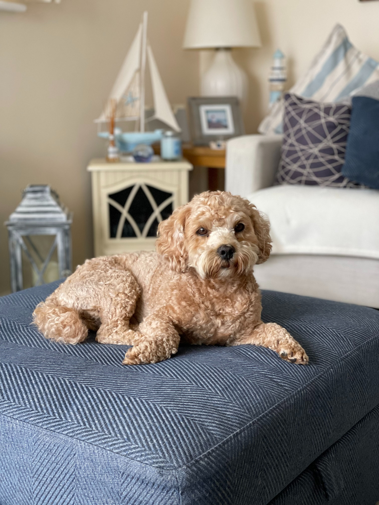
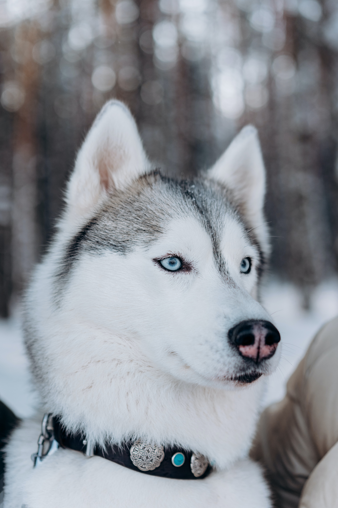
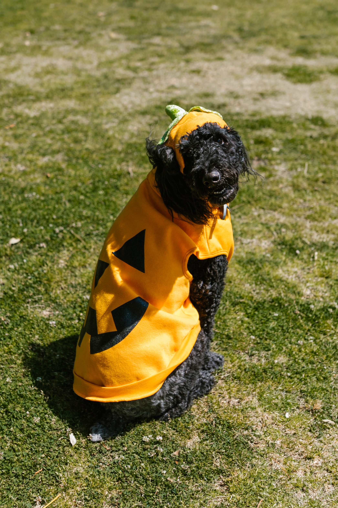
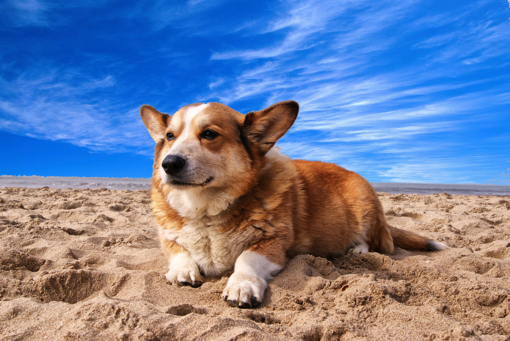

Jack
Jack is a Cockapoo who loves belly rubs and playing with humans.
He is energetic and loves when people plays fetch with him.
Likes
- Belly rubs
- Playing fetch
- Sneaking into the trash
Pilot
Pilot is a Malamute who loves to be outside exploring the great outdoors.
He is full of energy and prefers being otdoors rather than indoors.
Likes
- Being outside
- Exploring
- Running
Charlie
Charlie is a Cocker Spaniel who loves to dress up and play with his toys.
He is very friendly and loves to play with other dogs.
Likes
- Dressing up
- Playing with toys
- Playing with other dogs
Bluey

Bluey is a Siberian Husky who loves to be outside in the snow.
He is an extremely well behaved and follows directions well
Likes
- Hunting
- Playing in the snow
- Chasing his tail
Roscoe

Roscoe is a Pitbull who loves to stare out the window and watch the world go by.
He is very strong and loves to assert his dominance around others.
Likes
- Staring out the window
- Asserting dominance
- Chasing the mailman
Noodle
Noodle is a Corgi who loves to lay down and relax on a sunny dat at the beach.
He is very friendly and likes to meet new people at the beach.
Likes
- Relaxing
- Meeting new people
- Going to the beach
Shepherd

Shepherd is a German Shepherd who loves to move around and is always full of energy.
He is very loyal and loves to be around his owner.
Likes
- Being active
- Being around his owner
- Tearing apart his toys